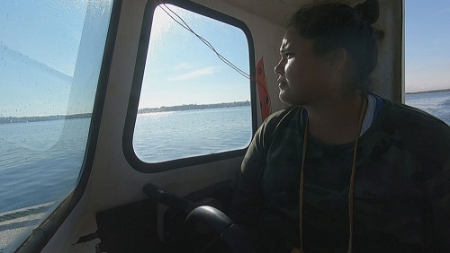
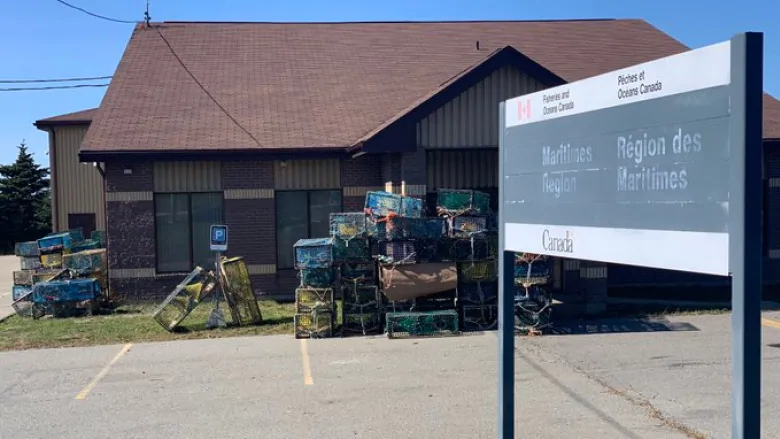
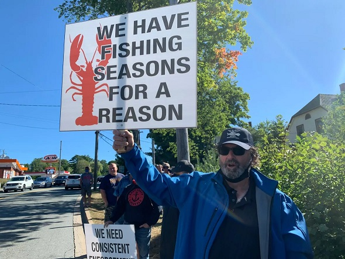

Nova Scotia Lobster Dispute
Hey goys. This is a guest article written by a buddy of mine, Northpoint. I simply formatted this for this website.
APT News:
This has been a problem brewing in the province for over twenty years. It started in 1999 when the Supreme Court of Canada upheld the Treaty rights of the Mi'kmaq to harvest lobster to maintain a moderate livelihood. Canada’s response to the Marshall decision was to sign fishing deals with bands in the Atlantic region that included $600 million for gear, boats, training and access to the existing commercial fishery. Members of the tribe admit to breaking regulations and portray themselves as virtuous saying it is merely food for their family and charity.
TDC_ARTICLE_START
"No licence. No tags.
She writes her name and Treaty 1752 on her buoys.
Francis, who is from the Acadia First Nation, is asserting her inherent right as a Mi’kmaw woman.
She provides food for her family, gives some of the lobster away, and sells and trades the rest."
'“You can’t put a dollar figure on our rights, on our treaties,” said Alex MacDonald, former chief of Sipekne’katik First Nation and a long-time Mi’kmaw fish harvester.
He said the livelihood fishery that some Mi’kmaq do is a drop in the bucket compared to the catch and profits in the non-Mi’kmaw industry.
Within the commercial lobster fishery, Mi’kmaq and Wolastoq First Nations make up just under four per cent of the $1.2 billion in total landed value for 2016.
“You have non-native fishermen that make millions of dollars every year. What is their moderate livelihood? Who do you compare with, you know?” asked MacDonald. “And why does ours have to be belittled? Why does it have to be minimum?
“All these resources that have been taken from my land,” said MacDonald, “we should be the richest people in Canada, not the poorest. But yet we’re the poorest people.”'
TDC_ARTICLE_STOP
Oh gawd goy, she's stahving!
They also get special privileges to fish outside of the normal season. But again admit to breaking rules by getting caught selling lobster in Sting operations set up by the Department of Fisheries and Oceans.
The Mi’kmaq are the only people harvesting lobster this time of year in southwest Nova Scotia. It’s part of the food fishery. The catch can be used for food, social, or ceremonial purposes but can’t be sold.
TL:DR: So this native tribe gets special treatment, privileges and millions in investment while complaining when they get caught breaking the rules put in place or that white fishermen are more successful at harvesting and selling their lobster.
The indians have been using illegal traps and have been making illegal sales off season for twenty years given a harvesting facility that facilitates and creates profits for their behavior. The traps have been pulled by the Nova Scotian fishermen themselves as there has been a total lack of fair enforcement. A quick breakdown on illegal traps would be the wrong size/diameter so catching lobster that are not mature, improper tags so it is unknown who is catching what and how much, and steel instead of iron bands so they sit at the bottom of the ocean and don't corrode after so long.
After years of flaunting the rules, receiving government investment and illegal sales and trapping all the while receiving positive national news coverage as the David in the Goliath story, the Whites had enough and started cutting illegal traps under the eyes of the RCMP (Canadian Federal Police) and dumped a hundred and fifty illegal traps outside the DFO office.

MSN: TDC_ARTICLE_START
"Sipekne'katik Chief Michael Sack said in a statement Monday that he is focusing his efforts this week on meeting with law enforcement and federal Fisheries Minister Bernadette Jordan.
Sack said over the weekend there were reports that Mi'kmaw lobster trap lines were being cut. On Monday, he called for charges to be laid, and said cutting traps was "shameful and un-Canadian" and done "falsely in the name of conservation."'
TDC_ARTICLE_STOP
The CBC have been kvetching because they haven't been allowed into 'non-indigenous' meetings or town halls saying that a lack of press access is hurting the chance for dialogue. But if you've been putting up with 20 years of being called a racist fisherman who is putting 'the safety of people' at risk by an extremely slanted, government run propaganda bureau then it is understandable to not want these "reporters" anywhere near your meetings.
Comments turned off, goy
Recent coverage. The lump in the video below that is wearing the red tortoise shell glasses I'm sure is a fair and measured cat lady who sees both sides of the dispute.
This is a link to a Global News article wherein Global News briefly interviews (((Solomon))) a gay jew downtown who doesn't even like lobster but is here to support Treaty rights. You can see from the crowd shots for those who don't know the area is extremely pozzed with hundreds of indoctrinated university students who are eating up this sacred Treaty Rights, distorted history bullshit that is fed to them in the classroom.
https://globalnews.ca/video/rd/337bf2ca-0ffb-11eb-8ed5-0242ac110003/?jwsource=cl
EDITORS NOTE: I know it's an accident, but that video link literally ends with jwsource. Also, don't bother watching that propaganda and giving them extra likes, it doesn't work with adblocker anyway.
CBC: TDC_ARTICLE_START
The natives now have what they call a 'self-regulated fishery' to maintain their moderate income and because of all this news coverage have received more assistance in the form of 3 more boats to their fleet.
'Non-Indigenous fishing groups have resisted the fishery, arguing it shouldn't occur outside of the regulated season. A fleet of their vessels removed 350 Mi'kmaw lobster traps from the water on the weekend of Sept. 19 to 20.
Colin Sproul, president of the Bay of Fundy Inshore Fishermen's Association, has said lobster-fishing season in St. Marys Bay doesn't start until the last Monday of November in order to let the animals reproduce and to make sure their stocks aren't depleted.'
TDC_ARTICLE_STOP
EDITORS NOTE: While I never recommend actually going to CBC's website, spending 10 minutes reading this page and skimming the videos is definitely useful to understand their propaganda.
Watch video in link: https://www.cbc.ca/news/canada/nova-scotia/lobster-facility-middle-west-pubnico-fire-1.5765665
TL:DR: Great example of the type of recent coverage on this event. They are selling dead frozen lobster, young lobster and female lobsters at the indian self-regulated fishery. The Chief, Michael Sack, has admitted that the band will take matters into their own hands all the while playing the media for more coverage of these 'racist Whites.' Just last week, a Mi'kmaw fishing vessel was destroyed in a suspicious fire at a wharf in the community of Comeauville. According to eyewitness testimony and cell phone pictures that I have seen firsthand, a common practice for some of these indian fishermen is to sell whatever lobster they can make a day's profit and go buy liquor while dumping what they can't sell in the forest to rot. This is my on the ground investigation so take that for what you will.
Around 200 White fishermen stormed the fishery grounds trashing lobster catches and torching a vehicle in the compound while the impotence of the RCMP was put on full display from a group of energized Whites sick of seeing the lobster populations and environment being destroyed by these indians.

It is a story that is continuing to break and the most recent development is a 'suspicious' fire set in Middle West Pubnico, the same facility that was stormed by the 200 White fishermen. This is pure speculation at this point but the possibility needs to be acknowledged that this could have been a self-set fire to continue to spur national and now international news coverage. Whether or not this investigation angle will be pursued only time will tell, but the Chiefs have already admitted that they will do whatever is necessary. Twenty years of watching poor indian fishing practices, no persistent regulation, special privileges, slanted news coverage and millions of dollars of investment, the White fishermen have had enough and I stand with these families who's multi-generational livelihood and familial income is at stake. This is the struggle of rural whites against the federal and provincial government as well as the national media and these irresponsible natives.
Now you know more then you probably ever would know on an ongoing Nova Scotia lobster dispute.